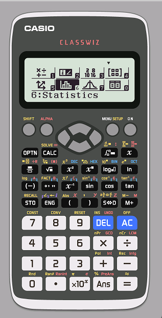
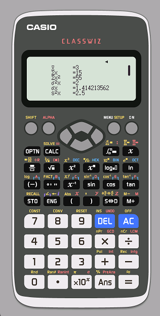
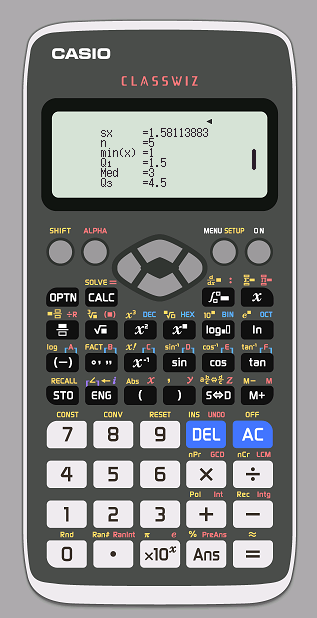

| Quảng cáo |

Đầu tiên, để tạo một bảng số liệu ghép nhớm, nhấn SHIFT -> MODE (SETUP) -> Nhấn xuống -> 3 để chọn vào Statistics -> 1 để bật Frequency
Muốn tính các thông số chính của mẫu số liệu, chỉ cần nhấn OPTN -> 2 sẽ có được các thông số như phía dưới  
Side note: nếu được thì nên bấm máy các bài độ lệch chuẩn để tránh tính sai Another fact: Casio-580 ko tính được mốt đâu nên nhớ công thức đi kekekeke |
Quảng cáo |